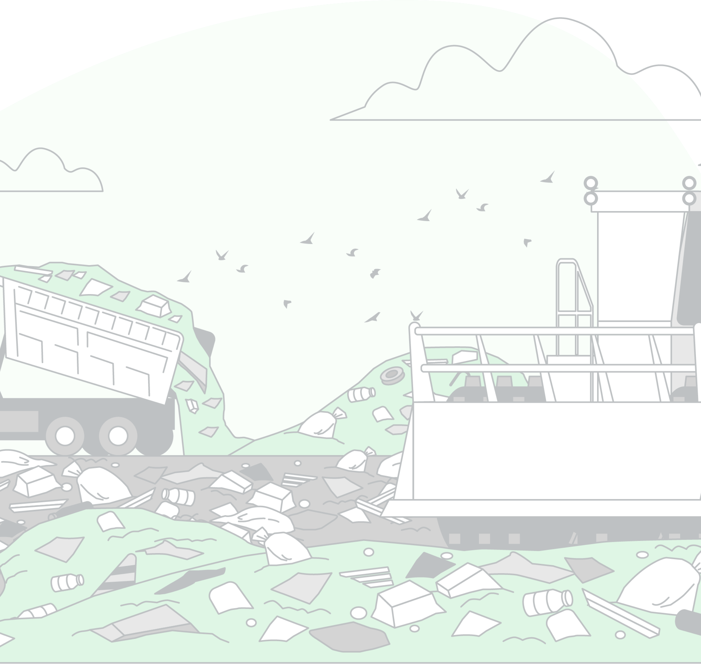

Our moto is firmly based on the following few words:
- "Reduce, Reuse, Recycle"
- "Think globally, act locally"
- "Waste not, want not"
- "Clean environment, healthy living"
All of the above mentioned quotes highlights the importance of proper waste management in maintaining a healthy environment and promoting overall well-being.What is Our MOTO?
The need for waste management arises from the increasing amount of waste produced by human activities, such as consumption, industrial processes, and population growth. This waste, if not properly managed, can have negative impacts on the environment and public health. Some of the main reasons for the need for waste management include:
- Environmental protection: Improper disposal of waste can cause pollution of air, water, and soil, as well as harm to wildlife and ecosystems.
- Public health: Unmanaged waste can attract pests, such as rats and insects, and can create conditions that are conducive to the spread of disease.
- Resource conservation: Landfills take up valuable space and burying waste means losing valuable resources that could be recycled or reused.
- Climate change: Methane and carbon dioxide are released when waste decomposes in landfills, which are potent greenhouse gases that contribute to climate change.
- Economic benefits: Proper waste management can lead to cost savings through recycling, composting, and reducing the need for new landfills.
- Compliance with laws and regulations: Many countries have laws and regulations in place that require proper waste management in order to protect the environment and public health.
Need of Waste Management?
Waste management refers to the collection, transport, processing, and disposal of waste materials. This can includes practices such as recycling, composting, and safe disposal of hazardous waste. The specific details of a waste management system will depend on the location and needs of the community it serves.
What is Waste Management?